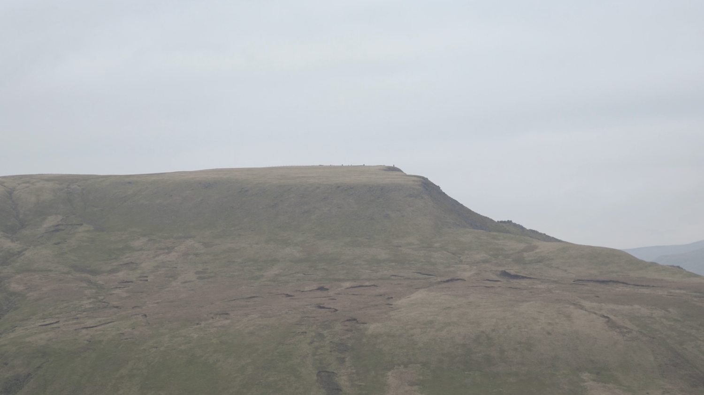
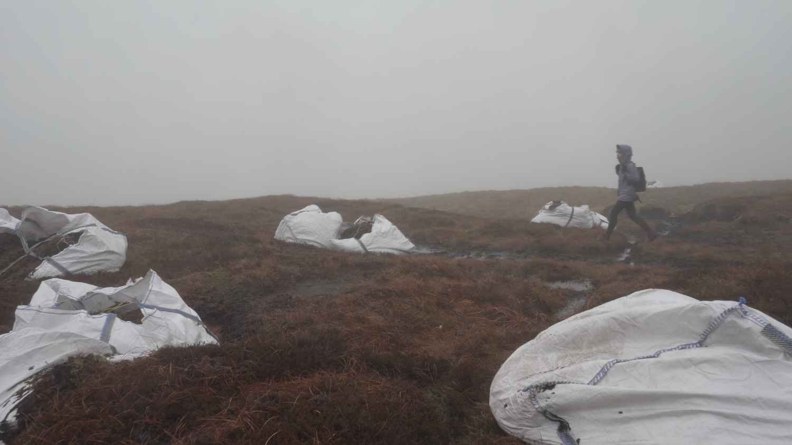
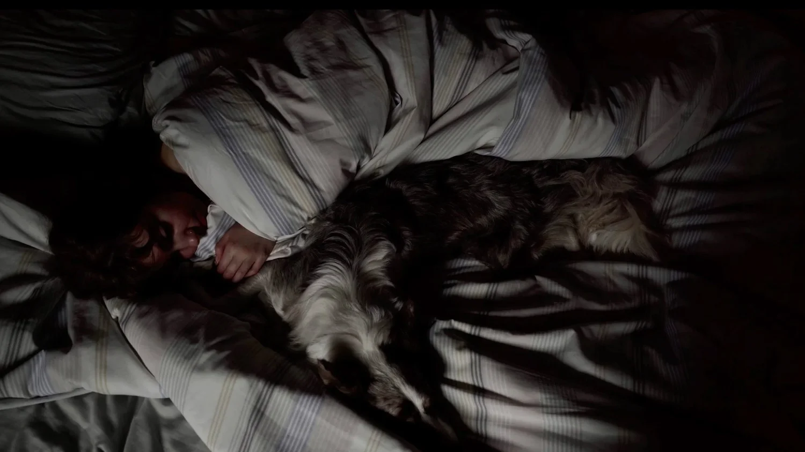
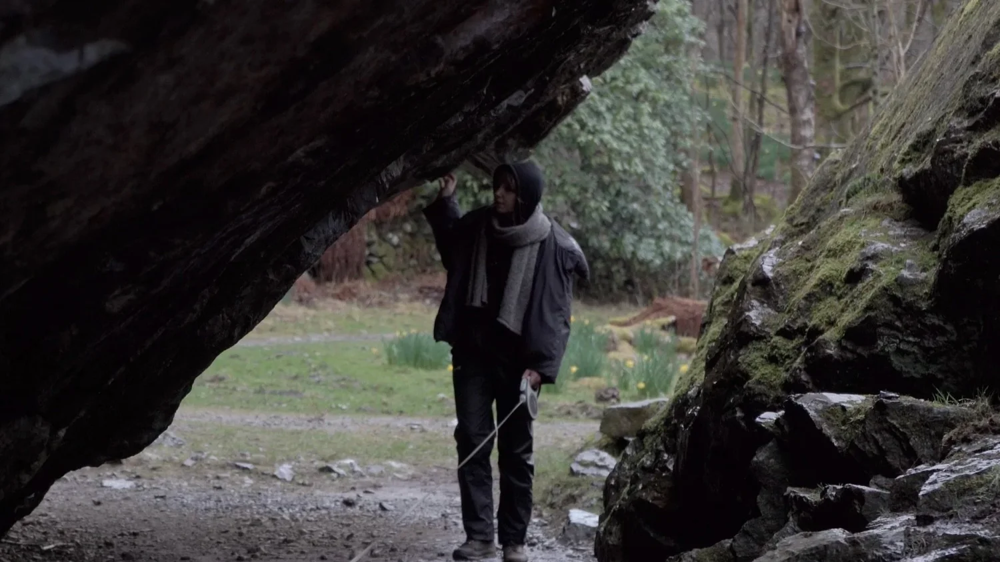

Antecedent Wayfinder





A moving-image collaboration with artist Jessica Ostrowicz, filmed during a journey to prehistoric cairns and standing stones across Britain.
Through the placing of stones as markers of memory, memorial and wayfinding, the work explores relationships between landscape, belonging and the traces of human activity.
The project was conceived, written and performed by Jessica Ostrowicz and developed as a film in collaboration with WR Saunders.
Artistic concept, text, narration and performance: Jessica Ostrowicz
Film direction, cinematography and editing: WR Saunders
Supported by Arts Council England.